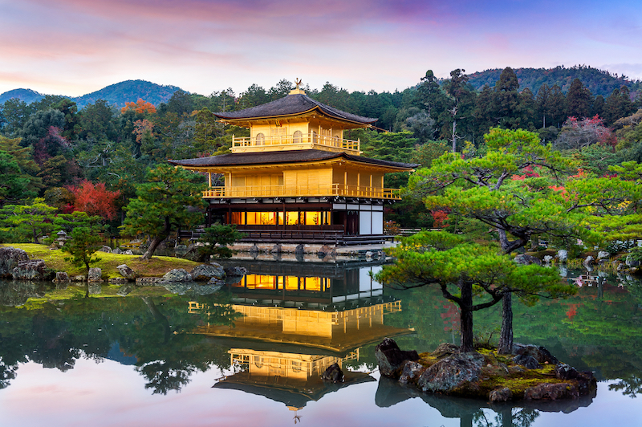
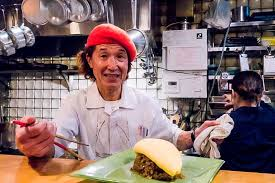
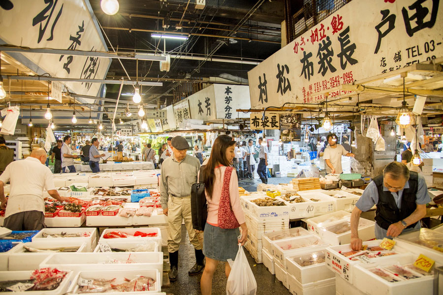

Why Japan?
Experience a Unique Blend of Tradition and Modernity
Japan is a country that seamlessly blends ancient traditions with cutting-edge technology. From the serene temples of Kyoto to the bustling streets of Tokyo, visitors can experience a rich cultural heritage alongside modern innovations. The country's natural beauty, including cherry blossoms, Mount Fuji, and hot springs, offers a diverse range of experiences for travelers seeking both adventure and relaxation.
You can still discover the essence of traditional Japan today. Beyond the vibrant cities, world-famous cuisine, and modern attractions, ancient temples, serene shrines, and picturesque villages continue to preserve the country's rich heritage.
Traditional Japanese Food - Washoku
Discover the Flavors of Japan
Washoku, the traditional Japanese cuisine, is a culinary art form that emphasizes the use of fresh, seasonal ingredients and minimal processing. From sushi and sashimi to ramen and tempura, Japanese food offers a unique taste experience that reflects the country's cultural values of respect for nature and attention to detail.

Omurice
Kichi Kichi Omurice is a famous restaurant in Kyoto, known for its unique and entertaining take on omurice, a popular Japanese dish made with fried rice and a fluffy omelet. Led by the charismatic Chef Motokichi Yukimura, the restaurant has gained international attention thanks to its spectacular omelet-cutting performance. With its delicious food and lively atmosphere, Kichi Kichi Omurice has become a must-visit destination for food lovers visiting Japan.
Location
📍Zaimokucho, Nakagyo Ward, Quioto

Fresh Fish
Tsukiji Outer Market is one of Tokyo’s most famous food destinations, offering a vibrant atmosphere filled with fresh seafood, traditional Japanese snacks, and local specialties. Although the wholesale fish auction moved to Toyosu, Tsukiji remains a popular place to experience Japanese food culture. Visitors can explore its narrow streets, enjoy freshly prepared sushi, and discover a wide variety of ingredients and delicacies loved by both locals and tourists.
Location
📍Tsukiji, Chuo Ward, Tokyo
Shukurimu
Shukurimu Patisserie 10 is a charming pastry shop in Tokyo known for its delicious Japanese-style cream puffs. Freshly baked every day, its signature shukurimu features a light, crispy pastry shell filled with smooth and flavorful cream. Combining traditional Japanese attention to detail with modern pastry techniques, Patisserie 10 has become a favorite stop for locals and visitors looking for a sweet treat in the city.
Location
📍Tokyo, Chiyoda City, Uchisaiwaicho 1 Chome−7−1, Hibiya Okuroji H01